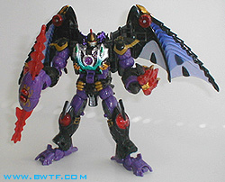
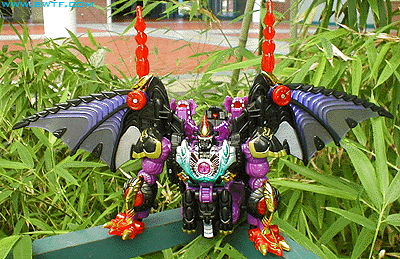
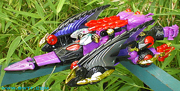
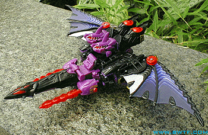
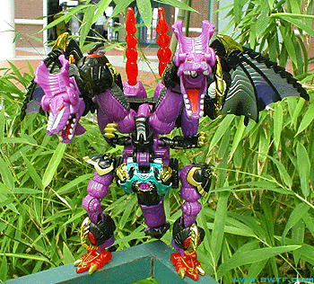
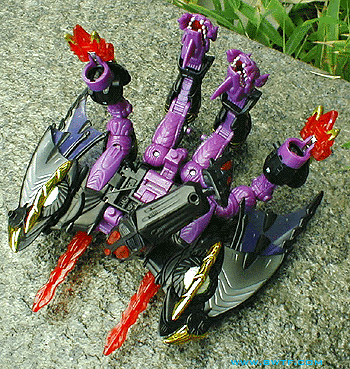

Allegiance
: Predacon
Size
: Ultra
Difficulty of Transformation
: Medium
Japanese Name
: Gigatron
Color Scheme
: Purple, black, transparent
dark red, bright red, gold, silver, transparent light purple, and some
chrome purple, chrome silver, chrome green-blue, chrome gold, chrome red,
and white
Mold History
: Megatron was a completely
new mold created for Car Robots (which subsequently became Robots in Disguise).
Rating
: 7.9

Because Megatron has
a total of 6 different modes, I'll review his robot mode first, since is
the one he's packaged in. Megatron's robot mode is simply beautiful, and
is easily the best out of all of his modes. His only extras to speak of
are the dragon claws in his midsection, the large tail-like section on
his back, and the dragon feet on the back of his hands. None of them really
get in the way, however, and all but the dragon feet fit rather well into
this mode (the dragon feet just look odd on the back of his hands). The
tail-like section on his back doesn't really have any set position, unlike
the other two extras, but it doesn't really stick out too much, so it's
no big deal. Megatron is very well-detailed in this mode, with lots of
different colors, including five- count 'em, FIVE- different chrome colors.
Be careful, though- the chrome on his head "fins" can chip easily. Megatron
is also very well-articulated, with as much articulation as anyone can
ask for, save no waist articulation. Megatron's weapon is also pretty neat-
it comes in two halves, which you can either put in both of his hands,
or combine them to form a laser-sword type of weapon. Both can also fire
their transparent red parts as missiles by pressing the red "jewels" in
the center of the main weapon. A really neat mode!

Megatron's bat mode
is by far the worst of all of his modes. It just looks... stupid, barely
like a bat at all. It's basically just his robot mode, but he's standing
on his hands and he has a different mouth. Big whoop. His robot legs also
make rather noticeable extras on his back, too.

Megatron's car mode
is... gah. Also a pretty poorly done mode. Although I'll admit the fromt
part looks cool, what with the neat-looking cockpit and the wheels with
wings on the top, the rest just looks stupid, and doesn't hold together
well at all. The back wheels are just attached to what are obvious his
arms, and, oh yeah, his legs are sticking out again. Bah.

Although Megatron's
jet mode is admittedly better than the previous two, it's still rather
bad. His legs, although not sticking out quite as much as in his bat and
car modes, are still rather obvious in this mode. His cockpit looks really
cool, though, and the guns are positioned rather nicely on its sides. The
wings also look pretty cool, "backwards" as they are. However, he doesn't
really roll well in this mode at all, because his back two wheels are,
again, just on the back of his arms, and they don't support the rest of
the body nearly as well as his small front wheel.

Megatron's two-headed
dragon mode is my favorite of his alt modes. It still has its problems,
but it's pretty cool. My main problem are that his legs are rather skinny
for a dragon's, and his arms are waaaay too small proportionally. That's
really about it, though. A two-headed dragon is just cool, and Megatron's
color scheme is really fitting. The arms can pop off if you aren't careful,
and they're rather hard to pop back on, so be careful when transforming
that part.

Although Megatron's
hand mode isn't quite the best of his alt modes, it's certainly the most
creative. You have to admit, the idea of a robot turning into a giant hand
is just freakin' cool. However, the large wings on the sides detract from
the look a bit, as do the tops of the four fingers, which are just merely
the dragon heads or claws. The thumb is a full-fledged claw, though, which
is pretty cool, as is the position of the weapons in this mode- they simulate
"exhaust flames", making it look like the hand is flying or something.
The outer two fingers don't stay in their places very well, however, and
this is biggest gripe I have with this mode. They continually flop around,
making it hard to pose this mode without just laying it on the ground.
Overall, Megatron is
a beautiful toy, at least aesthetically. His robot mode is really good,
too. However, most of his alt modes are pretty bad, and even those that
are good still have some major flaws. It's still a very versatile mode,
though, and six different modes is defintiely a plus.
Review by Beastbot